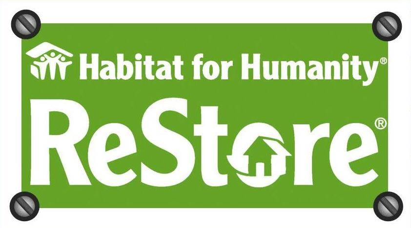

ReStore
ReStore Mission
• Raise funds to build homes locally by selling donated items at the Marshall, ReStore…
• Make home improvements affordable to anyone shopping at the ReStore…
• Divert useable materials from entering area landfills.
Restores’ encourage the recycling of reusable quality products. Proceeds from items donated go directly to help Redwood River Habitat for Humanity in its mission of providing safe, decent, affordable housing to low- income working people in our community. As an added benefit, the discounted products provide individuals with a cost-effective alternative when they repair or renovate or furnish their homes.
-Donations to nonprofit organizations are tax deductible